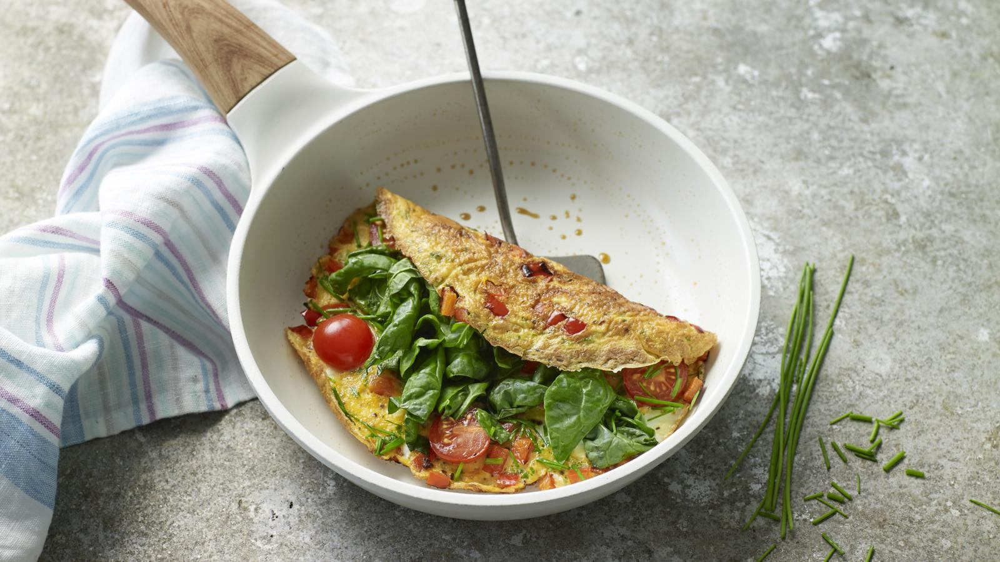
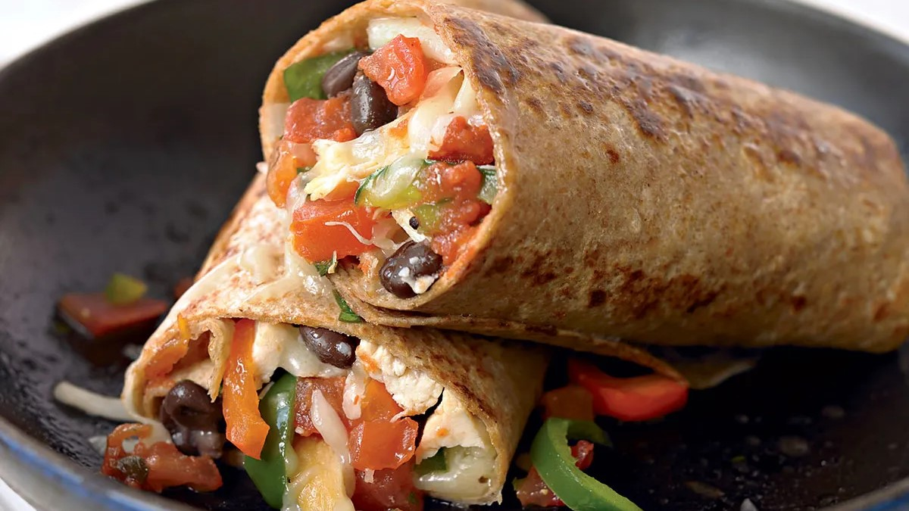

Omelette

Ingredients
- 1 tsp olive oil
- ¼ red, orange, or yellow pepper, chopped
- 2 free-range eggs
- Fresh parsley (small pinch)
- 4 cherry tomatoes, halved
- Large handful of spinach, torn
- Fresh chives, roughly chopped
- Freshly ground black pepper
Steps
- Brush or spray a non-stick frying pan with the oil and cook the pepper for 3-4 minutes until softened.
- Meanwhile, beat the eggs, adding pepper and parsley.
- Pour the eggs into the pan, add the cherry tomatoes, and cook until firm but still soft on top.
- Add spinach and chives, fold the omelette, and cook until golden brown.
Vegan strawberry pancakes

Ingredients
- 115g wholemeal spelt flour
- 1 tsp baking powder
- 1 tsp cinnamon
- 150ml soya milk
- 240g soya yogurt
- 1 tsp vanilla extract
- drop of rapeseed oil
- 200g strawberries
Steps
- Mix the flour with the baking powder and cinnamon in a bowl using a balloon whisk. In a jug, whisk together the soya milk, 2 tbsp of the yogurt and vanilla extract, then whisk this into the dry ingredients to make a thick batter.
- Cook over a low heat for 1-2 mins until set, and bubbles appear on the surface, then turn the pancakes using a palette knife. Cook for another 1-2 mins until golden and cooked through.
- Serve three pancakes per person topped with the remaining yogurt, berries, pecans and mint leaves.
Healthy Burrito

Ingredients
- 1 tsp chipotle paste
- 1 egg
- 1 tsp rapeseed oil
- 50g kale
- 7 cherry tomatoes
- ½ small avocado
- 1 wholemeal tortilla wrap
Steps
- Whisk the chipotle paste with the egg and some seasoning in a jug. Heat the oil in a large frying pan, add the kale and tomatoes.
- Cook until the kale is wilted and the tomatoes have softened, then push everything to the side of the pan. Pour the beaten egg into the cleared half of the pan and scramble. Layer everything into the centre of your wrap, topping with the avocado, then wrap up and eat immediately.
Scrambled Eggs
Ingredients
- 4 eggs
- 2-3 tbsp low fat milk
- Salt and pepper to taste
- TO SERVE:
- 2 slices multigrain bread, toasted
Steps
- Place medium sized non-stick frying pan over low heat.
- Crack eggs into a medium sized bowl and add milk, pepper and a small pinch of salt. Whisk together with a fork. Pour eggs into pan and stir slowly while cooking.
- Because of the low heat, eggs will take a while to start cooking, but once they start, they cook quite quickly. Keep stirring so that eggs cook evenly.
- Remove from heat once cooked to your liking and serve on prepared toast.
Healthy Gnocchi

Ingredients
- 1 tsp olive oil
- 1 red onion
- 2 garlic cloves
- 1 tbsp tomato purée
- 400g can white beans
- 400g can chopped tomatoes
- 100g frozen spinach
- 400g pack fresh gnocchi
- 2 tbsp reduced-fat crème fraîche
- 25g parmesan
- small handful of fresh parsley
Steps
- Heat the oil in a large saucepan over a medium-low heat and cook the onion for 8-10 mins until soft but not coloured. Stir in the garlic and cook for 1 min until fragrant.
- Add the tomato purée and the beans, along with their liquid, then pour in the tomatoes. Bring to a simmer, season well, then stir in the spinach. Stir and cook for 2-3 mins until the spinach has loosened.
- Add the gnocchi, cover and cook for another 2-3 mins, then uncover and stir in the crème fraîche. Simmer for another 5 mins, adding a splash of boiling water if needed, until the gnocchi is cooked through. Serve in bowls sprinkled with the parmesan, fresh parsley and a little black pepper to finish.
Lasagne

Ingredients
- 1 tbsp olive oil
- 1 large onion
- 320g carrots
- 2 celery sticks
- 2 bay leaves
- 500g 5% beef mince
- 3 large garlic cloves
- 400g can chopped tomatoes
- 2 tbsp tomato purée
- 1½ tsp vegetable bouillon powder
- 400ml semi-skimmed milk
- 30g wholemeal flour
- 6 sheets wholemeal lasagne
- 25g finely grated parmesan
Steps
- Heat the oven to 180C/160C fan/gas 4. Heat the oil in a large frying pan over a medium heat and fry the onion, carrots, celery and one of the bay leaves for 8-10 mins until the veg softens and is starting to turn golden. Add the mince and garlic, and stir-fry until the beef browns, about 5 mins. Tip in the tomatoes and a canful of water, the tomato purée and bouillon, bring to the boil, then cover and simmer for 20 mins, removing the lid after 10 mins to reduce the mixture slightly.
- Meanwhile, pour the milk into a medium pan with the flour and whisk over a low heat until the mixture is lump-free. Add the second bay leaf and a good pinch of nutmeg, and continue to cook, whisking, for 8-10 mins until thick.
- Remove the bay from the mince and white sauce, and discard. Spoon a third of the mince into the base of a 19 x 24cm baking dish and top with two lasagne sheets. Spoon over half of the remaining mince, then top with two more lasagne sheets, the rest of the mince and the remaining lasagne sheets. Spoon over the white sauce and sprinkle with the cheese. Bake for 40 mins until bubbling and golden.
Healthy chicken katsu curry

Ingredients
- 1 tsp cold-pressed rapeseed oil
- 2 boneless, skinless chicken breasts
- 2 tsp cold-pressed rapeseed oil
- 1 medium onion
- 2 garlic cloves
- thumb-sized piece ginger
- 2 tsp medium curry powder
- 1 star anise
- ¼ tsp ground turmeric
- 1 tbsp plain wholemeal flour
- 100g long-grain brown rice
- 1 medium carrot
- ⅓ cucumber
- 1 small red chilly
- juice ½ lime
Steps
- Cook the brown rice in plenty of boiling water for 35 mins or until tender.
- Crush the almonds using a pestle and mortar, or blitz in a food processor until finely chopped, then sprinkle over a plate. Grease a small baking tray with a little of the oil if baking in the oven. Brush the chicken on both sides with the remaining oil and season well. Coat the chicken with the nuts and place on the tray. Press any remaining nuts from the plate onto each breast. Bake for 20 mins in the oven, or 18-20 mins in the air-fryer until browned and cooked through. Rest for 4-5 mins on the tray, then slice thickly.
- Meanwhile, make the sauce. Heat the oil in a medium non-stick saucepan and add the onion, garlic and ginger. Loosely cover the pan and fry gently for 8 mins or until softened and lightly browned, stirring occasionally.
- Stir in the curry powder, star anise, turmeric and a good grinding of black pepper. Cook for a few secs more, stirring. Sprinkle over the flour and stir well. Gradually add 400ml water to the pan, stirring constantly.
- Bring the sauce to a simmer and cook for 10 mins, stirring occasionally.
- Once the rice is tender, add the spring onions and cook for 1 min more. Toss the carrot and cucumber with the chilli, lime juice and herbs.
- Divide the sliced chicken between two plates, pour over the sauce and serve with the rice, salad and lime wedges for squeezing over.
Stuffed pasta bake bolognese

Ingredients
- 250g large pasta shells
- 200g mascarpone
- 2 x 125g balls mozzarella
- large bunch basil
- 3 garlic cloves
- parmesan
- 1 tbsp olive oil
- 1 onion
- 1 celery stick
- 1 carrot
- 400g beef mince
- 2 garlic cloves
- 250ml red wine
- 1 tbsp tomato purée
- 3 bay leaves
- 2 x 400g cans chopped tomatoes
- pinch of sugar
- 1-2 tsp balsamic vinegar
Steps
- To make the bolognese, heat the oil in a wide ovenproof pan over a medium heat. Fry the onion, celery and carrot with some seasoning for 20 mins until soft and lightly golden. Tip in the beef mince, turn up the heat and fry, stirring regularly, for another 10 mins until the mince browns. Add the garlic, fry for a minute, then pour in the wine and bubble for a few mins more, scraping the pan to release any bits. Stir through the purée, bay leaves and tomatoes, with a canful of water. Simmer for 1½ hrs, covered for the first hour, then remove the lid and bubble until the tomatoes have broken down. Season with salt, pepper, the sugar and balsamic vinegar.
- Tip the pasta shells into a large heatproof bowl with a pinch of salt, and pour over a kettle of boiled water. Cover and leave to soften for 15-20 mins – they need to retain some firmness so you can fill them.
- Heat the oven to 200C/180C fan/gas 4 and drain the pasta. Use a fork to mash the mascarpone with the mozzarella, chopped basil, garlic and some black pepper in a bowl.
- The bolognese should be a little wetter than you’d like as the pasta shells will absorb some of the liquid as it bakes. Remove from the heat, giving it a final stir. Using a teaspoon, fill the pasta shells with some of the mascarpone mixture, pressing the mix in with your index finger. Nestle the shells into the sauce, filled-side up. Bake for 20-30 mins until the top is golden and bubbling, and the pasta is tender. Grate over some parmesan and finish with a few basil leaves.
Mascarpone dessert

Ingredients
- 1kg apricot
- 1 large orange
- 85g golden caster sugar
- 2 x 250g tubs mascarpone
- 500g tub vanilla custard
- 140g amaretti biscuit
- about 50g/2oz grated dark chocolate
Steps
- Heat oven to 220C/fan 200C/gas 7. Tip the apricots into a roasting tin, toss with the orange zest, juice and sugar and roast for 15-20 mins until soft. Remove the skins if you like. Tip into a bowl to cool.
- Whisk the mascarpone and custard together until completely blended.
- Tip the biscuits into a large glass bowl, then top with the apricots and custard. Scatter generously with the grated chocolate, then cover and chill until ready to serve.
Lemon cheesecake

Ingredients
- 110g digestive biscuits
- 50g butter
- 25g light brown soft sugar
- 350g mascarpone
- 75g caster sugar
- 1 lemon
- 2-3 lemons
- juiced (about 90ml)
Steps
- Crush the digestive biscuits in a food bag with a rolling pin or in the food processor. Melt the butter in a saucepan, take off heat and stir in the brown sugar and biscuit crumbs.
- Line the base of a 20cm loose bottomed cake tin with baking parchment. Press the biscuit into the bottom of the tin and chill in the fridge while making the topping.
- Beat together the mascarpone, caster sugar, lemon zest and juice, until smooth and creamy. Spread over the base and chill for a couple of hours.
Microwave mug cake

Ingredients
- 4 tbsp self-raising flour
- 4 tbsp caster sugar
- 2 tbsp cocoa powder
- 1 medium egg
- 3 tbsp milk
- tbsp vegetable oil
- a few drops of vanilla essence
- 2 tbsp chocolate chips
- nuts, or raisins etc (optional)
Steps
- Add 4 tbsp self-raising flour, 4 tbsp caster sugar and 2 tbsp cocoa powder to the largest mug you have (to stop it overflowing in the microwave) and mix.
- Add 1 medium egg and mix in as much as you can, but don't worry if there's still dry mix left.
- Add the 3 tbsp milk, 3 tbsp vegetable or sunflower oil and a few drops of vanilla essence and mix until smooth, before adding 2 tbsp chocolate chips, nuts, or raisins, if using, and mix again.
- Centre your mug in the middle of the microwave oven and cook on High for 1½ -2 mins, or until it has stopped rising and is firm to the touch.
Rice pudding

Ingredients
- 100g pudding rice
- 50g butter
- for the dish
- 50g sugar
- 700ml semi-skimmed milk
- pinch of grated nutmeg
- 1 bay leaf
Steps
- Heat the oven to 150C/130C fan/gas 2. Wash and drain the rice. Butter a 850ml baking dish, then tip in the rice and sugar and stir through the milk. Sprinkle in the nutmeg and top with the bay leaf or lemon zest.
- Cook for 2 hrs or until the pudding wobbles ever so slightly when shaken.